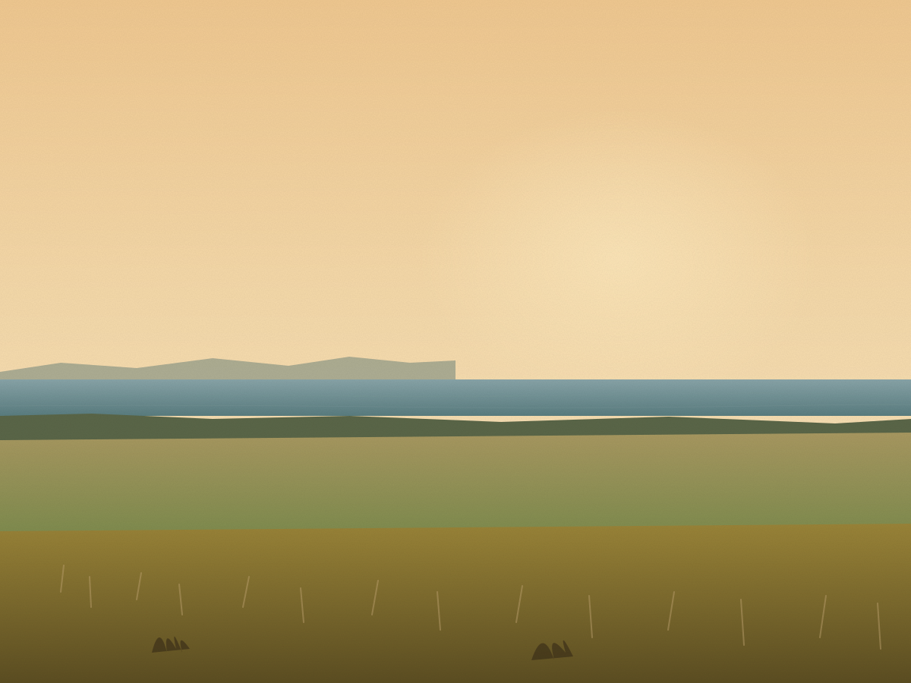

Sollved Consulting
Helping teams get unstuck, aligned, and moving again.
When ways of working break down, priorities blur, and momentum stalls, we help teams reset how they operate and get back to delivering.
The problem
Most teams aren't failing. They're stuck.
Good people can still lose momentum when the work is unclear, decisions are slow, and every priority feels urgent.
- Too many priorities, not enough progress.
- Constant activity, little momentum.
- Unclear ownership and decision-making.
- Strategy changes, but the team doesn't.
The shift
We don't just run workshops. We help teams change how they work.
What We Do
Practical support to help teams align, reset, and perform.
Team Reset and Momentum
A structured program to help teams break unproductive patterns, align on what matters, and build delivery momentum.
Learn MoreTeam Offsites and Facilitation
High-impact sessions that bring teams together, surface real issues, and drive meaningful outcomes.
Learn MoreTeam Reset and Momentum Program
When teams lose momentum, it's rarely about effort.
It is usually about how work is structured, aligned, and owned.
What it solves
- Lack of clarity
- Too many priorities
- Ineffective ways of working
- Slow or reactive delivery
How it works
- Diagnose
- Reset
- Embed
Outcome
A team that knows what matters, how to work together, and how to deliver.
Team Offsites and Facilitation
Most offsites create conversation. The best ones create change.
What you get
- Strategy alignment
- Honest conversations
- Clear decisions
- Stronger team connection
Outcome
Teams leave aligned, engaged, and clear on what happens next.
How We Work
Structured. Practical. Focused on outcomes.

Proof
We went from stuck and unclear to aligned, focused, and moving again.
The work is measured by clearer priorities, better decisions, and teams that know what happens next.
Companies worked with
Experience across complex, high-stakes environments.
Sportsbet
Hydro Tasmania
MarinusLink
AEMO
GLPR Digital
Westgate Health Co-op
About Jason Egbers
Real-world delivery experience, not just facilitation.
Jason Egbers, Principal Consultant, is a senior transformation, program, and delivery leader with 20+ years' experience helping organisations navigate change, get programs delivering, and build lasting momentum.
- Senior program, delivery, and transformation leader.
- Hands-on delivery experience across complex environments.
- Known for simplifying complexity and driving momentum.
- Strong facilitator and operator — not one or the other.

Start a Conversation
If your team feels stuck, it's fixable.
It doesn't need to take 6 months. If your team feels unclear, reactive, or lacking momentum, let's talk about what needs to shift.